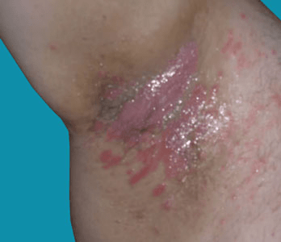

Hailey-Hailey disease is also known as familial benign chronic pemphigus. It is a rare inherited skin condition,
in which red scaly areas or small blisters appear at sites of friction.
The condition flares intermittently and tends to come and go. Many patients are able to lead full and normal lives,
with their condition being a nuisance rather than a serious problem. Some patients are more severely affected and
experience more persistent painful raw areas of the skin with development of superficial blisters.Hailey-Hailey
disease is also known as familial benign chronic pemphigus.
It is a rare inherited skin condition in which red
scaly areas that can be itchy and sore can lead to superficial blisters and eroded (broken) areas of the skin
folds of the groin, armpits, neck and under the breasts. The condition flares intermittently and tends to come
and go. Many patients are able to lead full and normal lives, with their condition being a nuisance rather
than a serious problem. Some patients are more severely affected and experience more persistent painful
raw areas of the skin with development of superficial blisters.

Yes – see above. The condition is inherited in a pattern known as 'dominant inheritance', which means that there is a 1 in 2 [50:50] chance that each child of an affected parent will inherit the skin problem.
No. The underlying genetic defect cannot be altered; however, treatment does help and long remissions are common.